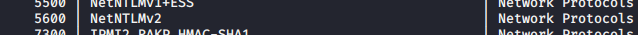

open a file in kali and paste the hash there

hence we will use thi

to narrow down the results
rockyout.txt is thedefault wordlist and u can google abt
hashcat worlist
password seclist
https://github.com/danielmiessler/SecLists
search in it for passwords
he uses 70 million big wordlists
for hack the box can use rockyou.txt

hence always run hascat on your base os as it requires gpu
so on source windows got to following

copy rockyou.txt to your hashcat folder

thus it cracled it
70 percent of clients ka aise mil jaata hai
other efg of passwords are
companyname1 or companyname! or companyname123
or fall2019 or winter2019
think abt how user will think